Control Structures Components
In this chapter we are going to learn about the Control Structures Components
Introduction
These components could be used to take decisions and separate the execution to different branches where one of these brances will be executed based on the evaluation result of specific conditions
Also it can be used to repeat the execution of specific commands
We have many components in this category:
If Statement
Else
Else If
Switch
Case
Else (Other)
For Loop
For In Loop
While Loop
Do Again Loop
Try Catch
Exit Command
Loop Command
If Statement
In the Interaction Page we can determine the Condition

For example, if the condition is (x=1) the next steps will be generated in the Steps Tree
Sure, This is not a complete program, and will lead to runtime error because the x variable is not defined!
Else
Using (Else) We can determine what to do if the (If Statement & Else If Statements) conditions are not True

Example:
Else If
Using many (Else If) statements, we can evaluate different conditions
In the Interaction Page we can determine the condition
In the next example, We have the X variable and we use (If Statement) and (Else if) statements to determine what to do based on the variable value
Switch
Using the Switch component we can take decision based on the different values of a variable.
We will create the next example:
x = 10
Switch x
Case 1
Print One (New Line)
Case 10
Print Ten (New Line)
Else
Print Other Number! (New Line)
End of Switch
Start new program
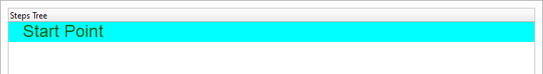Define the X variable, and set X to 10
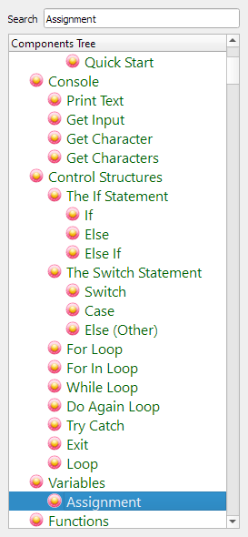
This will generate the next step
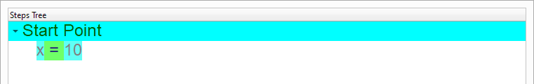Start using the Switch component
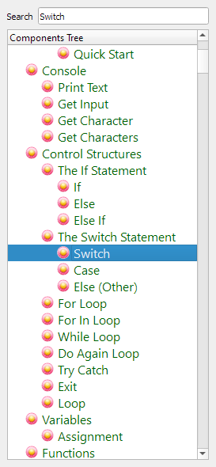 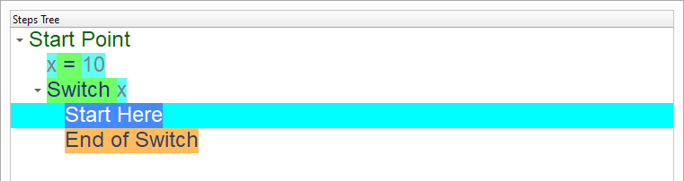
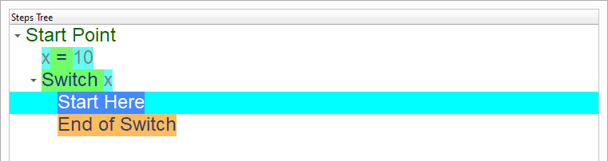
Now we can handle the different cases
Case
The next steps check if x = 1

 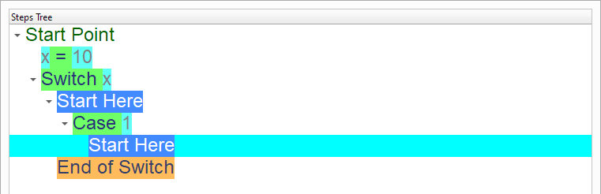
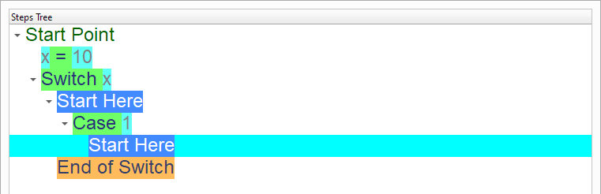
In this case we will print (one)


The next steps check if x = 10
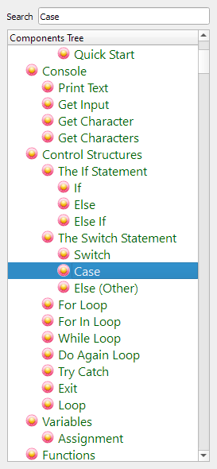 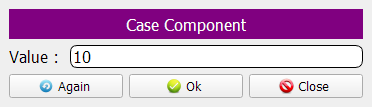 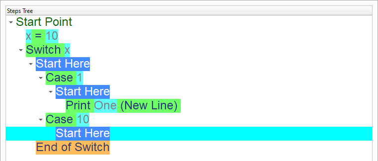In this case we print (Ten)
 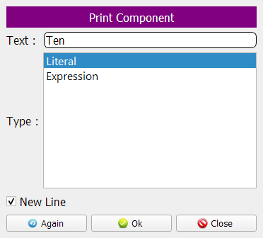
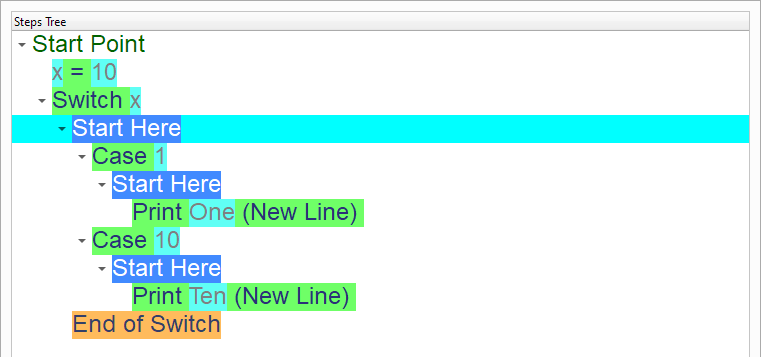
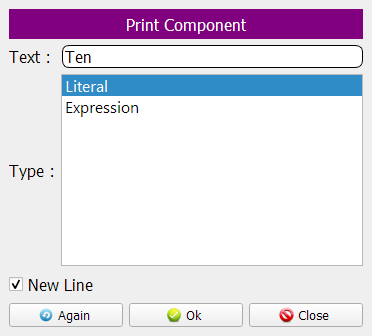
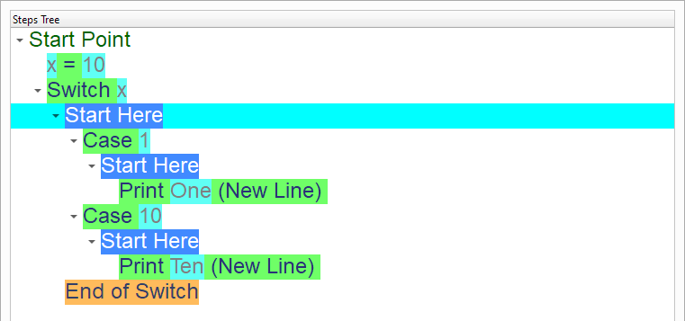
Else (Other)
Using the Else (Other) component we can check the other cases
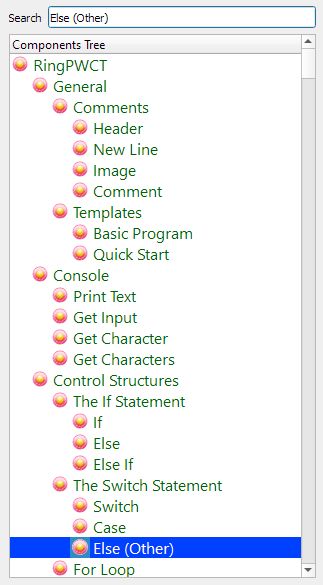 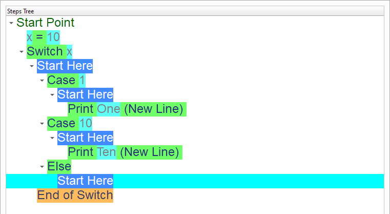In this case we print (Other Number!)

 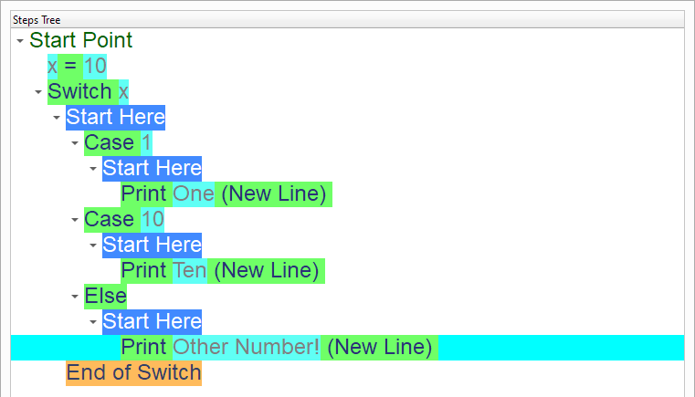
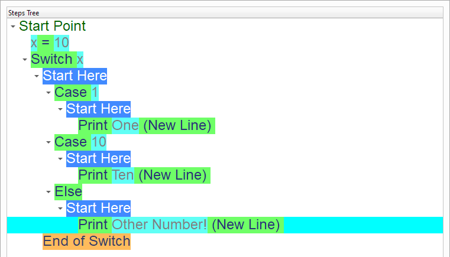